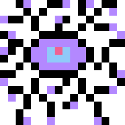
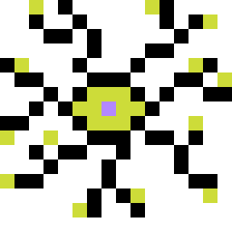
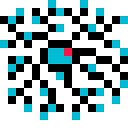

Neurônio
São prolongamentos ramificados que conduzem o estimulo nervoso, o estimulo entra pelos dentritos (A parte de cima), é conduzido pelo corpo celular e sai pelo axônio(a parte de baixo), basicamente eles conduzem a comunicação entre o sistema nervoso e as outras partes do corpo.
Astrócito protoplasmático
Compõe a glia. Ele se localiza apenas no sistema no córtex cerebral e em partes do cérebro, eles sustentam neuronios, reparam o tecido nervoso após lesões e regulam a passagem de substancias entre o sangue e o cérebro.
Astrócito Fibroso
Compõe a glia. Se localiza em fibras do cerebro e na medula espinhal.Eles oferecem suporte estrutural e metabolico aos axônios, envolvem e isolam sinapses e ajudam a cicatrizar o tecido nervoso.
Microglia
Compõe a glia e está localizado por todo o tecido nervoso. Atuam como células imunologicas, realizam a fagocitose e respondem a danos e infecções no tecido nervoso.